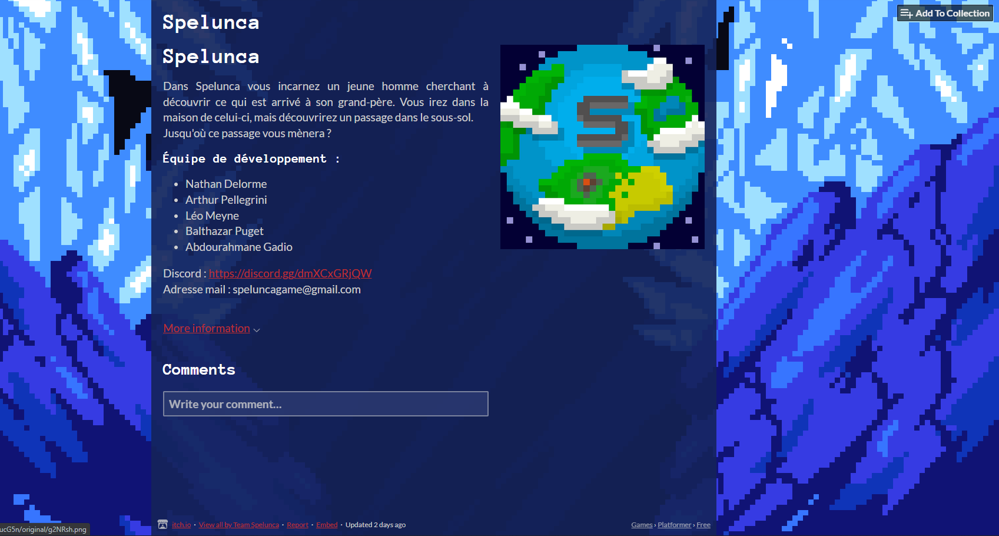

Bonjour à tous , c’est Balthazar ! Dans la newsletter de cette semaine nous vous présenterons les nouvelles fonctionnalités que nous avons produites cette semaine (ainsi que celles en cours d'exécution) et des informations sur la semaine à venir !
Nous avons implémentés des plateformes mouvantes qui se déplacent constamment entre deux points. Ce type de plateforme va nous permettre d'élaborer des niveaux encore plus variés !

La page de téléchargement du jeu est maintenant à jour ! Elle était un peu terne avant mais nous avons ajouté quelques visuels et descriptions.
Nous avons malheureusement pris un léger retard ce qui fait que ces deux fonctionnalités ne sont pas encore tout à fait prêtes (nous sommes 80% du développement pour les deux mécaniques). Nous vous les présenterons donc la semaine prochaine.
Cette semaine le groupe de développement 1 est constitué de Nathan et Arthur. Ils auront pour mission de développer le menu de sélection des differents niveaux
Cette semaine le groupe de développement 2 est constitué de Léo et Abdouramane . Ils auront pour mission de développer une fonctionnalité de timer pour que le joueur puisse mesurer sa rapidité à completer un niveau.
Cette semaine le groupe de développement 3 n'est composé que de moi (Balthazar). Je suis chargé de faire le niveau tutoriel du jeu (qui resemblera à une cave de maison).De plus, je vais réaliser de nouveaux graphismes à intègrer dans ce niveau.
N'hésitez pas à suivre et partager notre projet. Vous pouvez venir nous soutenir et poser vos questions sur notre serveur Discord.
Merci d'avoir lu cette onzième newsletter et à la semaine prochaine !
Team Spelunca.
Rédaction : Balthazar PUGET